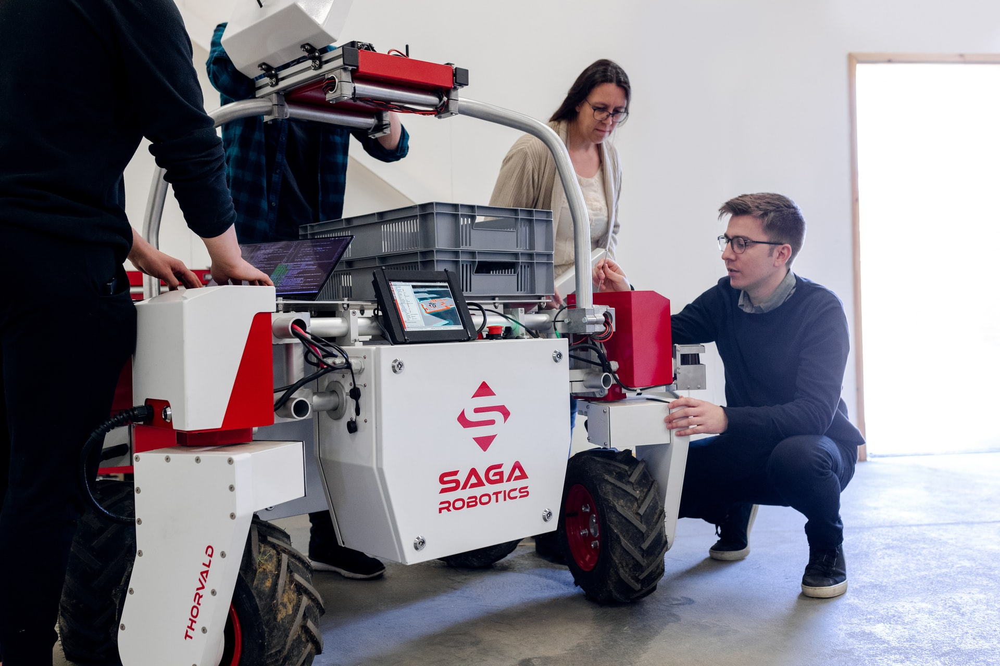

International Conference on Robotics, Aeronautics, Mechanics and Mechatronics 05 - 06 May 2021
Tech Conference
An International Conference on Robotics, Aeronautics, Mechanics and Mechatronics which aims to provide the platform for Students, Engineers, Researchers and Scientists to share the knowledge and ideas in the recent trends in the field of Robotics, Aeronautics, Mechanics and Mechatronics. It focuses on Robotics and Mechanical Engineering, Actuator design, robotic mechanisms and design, robot kinematics and dynamics, Agile Manufacturing, Agriculture, construction, industrial automation, manufacturing process, Automation and control systems, middleware, etc.
